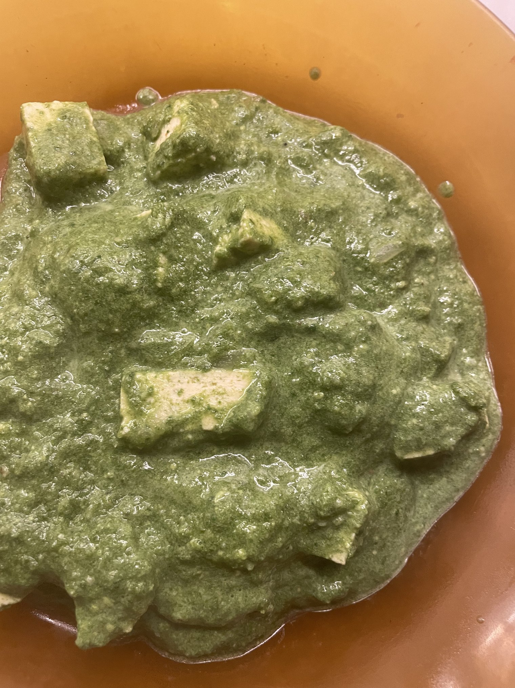

Palak paneer
Ingredients
2×
- 300 g de espinacas
- 100 ml de crema de leche de soja
- 1 cebolla
- 1 tomate
- 1 cdta de jengibre rallado
- 1 cdta de semillas de cilantro
- 0.5 cdta de comino
- 0.5 cdta de garam masala
- 200 g de tofu

Preparación
Paso 1
Hervir 300 g de espinacas y triturarlas con 100 ml de crema de leche de soja.
Paso 2
Sofreír 1 cebolla picada con 1 tomate, 1 cdta de jengibre rallado, 1 cdta de semillas de cilantro, 0.5 cdta de comino y 0.5 cdta de garam masala.
Paso 3
Añadir la crema de espinacas y 200 g de tofu en dados. Cocer unos minutos y salar.